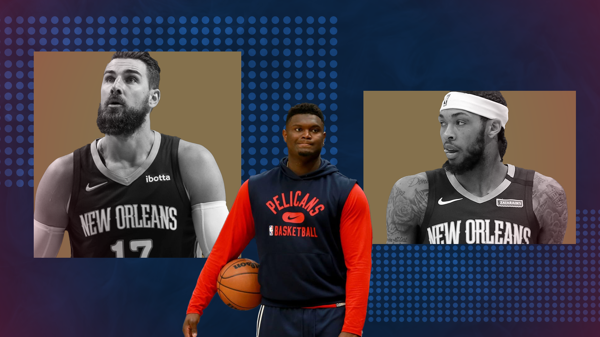

The New Orleans Pelicans need Zion more than ever
The New Orleans Pelicans are entering an inflection point early in their run. Where to from here?
Sean Carroll illustration
I n June 2019, as Kawhi Leonard led the Toronto Raptors to a ring past a depleted Golden State Warriors, I decided I wanted to be a basketball fan.
In perhaps an ill-fated move retrospectively, I opened up a map of North America and looked for a team to follow.
“Oh, New Orleans,” I said to myself. “I liked Treme. I theoretically like a po’boy.”
About thirty seconds later my New Orleans Pelicans fandom was set in stone when I discovered we had the first overall pick in a draft with a consensus number one rarely seen since King James himself in 2003.
I felt quite chuffed with myself – as a basketball fan, I was set for the next eight years.
Two and a bit seasons, a global pandemic, a handful of injuries and some numbskull roster decisions later and the Pelicans are 4-15 and our 284-pound-and-counting future is sidelined with no end in sight. All the Pelicans seem to have is a lot of questions.
There are questions, for the second year running, about whether we had the best offseason we could to maximise the skillsets of our young core.
There are questions surrounding Zion Williamson’s immediate health, as neither he, the Pelicans nor the NBA media-at-large can even decide on a timeline for a timeline for his return.
There are questions about his future in New Orleans, and whether or not any team in the NBA would want to invest long-term in a player who has missed almost half of his games in his first three seasons in the league.
There are questions over the ethics of every other GM in the league taking David Griffin for a fucking ride every summer.
I’ll leave speculation over Zion’s weight, attitude, contract and future in the league to more capable hands, and I’ll leave rightful criticism of the Pelicans front office to this blog’s esteemed editor-at-large.
As a Pelicans fan, the question I’m more interested in is can we play some good basketball with this roster when Zion returns? This is without a doubt a roster built for Zion, so his absence in the offence is more than just the 27 points he provides: our whole offensive gameplan is (and should be) centred around him. But can the Pelicans improve? Can we string together some play to convince Zion this is the team for him? Will it work in any shape or form?
The backcourt
Like any transcendent offensive threat, the conventional, no-brainer wisdom with Zion seems to be “put shooters around him”. If this man-cum-freight-train requires a double (or even a triple) team to put him off his game, then in a best-case scenario you want the other four guys on the court to be knock-down three-point threats.
That’s why it was interesting when Griff and the gang forwent Lonzo Ball – who had just had a career year shooting the ball – for a Devonte’ Graham relegated to the Hornets bench, a Tomas Satoransky never known for his shooting volume or efficiency and a capable-but-ageing Garrett Temple.
By interesting, I mean extremely fucking concerning.
In terms of pure numbers, Ball and Graham were actually near-identical beyond the arc: Graham shot 37.5 percent on 8.7 attempts a game to Ball’s 37.8 percent on 8.3 attempts a game.
Better yet, Devonte’ Graham, who like Ball, came into the league a ball-dominant point guard, had relinquished a lot of his point responsibilities to Terry Rozier and Ball’s brother LaMelo and taken on a more off-ball role.
His catch-and-shoot three-point-percentage had risen to a sky-high 42.3 percent on 5.3 attempts a game, slightly better than Ball, who similarly was giving up the rock to Zion and Brandon Ingram with more regularity and shooting 40.2 percent on 5.9 attempts.
But sometimes your gut feeling, the “vibe”, is more important, and it felt wrong to be giving up a guy who can pass, shoot and defend one through three with ease for a 6’1” point guard who after an impressive but inefficient sophomore season had fallen to third-choice in the Charlotte backcourt.
My guts certainly proved prescient: Lonzo is slotting perfectly into a 12-6 Chicago Bulls side and shooting a blistering 42.1 percent from three (good for top-25 in the league) while Devonte’ is hovering around 35.9 percent from the arc with his field goal percentage starting with the wrong number.
The eye test isn’t proving any better: Lonzo’s problem was always his hesitancy when making a decision, whereas Graham’s is proving to be the opposite. Too many times this season he’s hefted up a deep three early in the shot clock, and while Antonio Daniels is impressed when the odd one goes in it’s not a sustainable offensive option.
The rest of our guards are no better. Nickeil Alexander-Walker is shooting an abysmal 37.6 percent from the field and 29.1 percent from three, and is looking less like an NBA-calibre player every day.
Kira Lewis Jr is fun and explosive coming off the bench but you cover your eyes every time he pulls up for three (shooting 20.9 percent (!) on the season). The aforementioned Satoransky and Temple have been solid in their roles but neither are going to be huge contributors on offence, even when Zion returns.
Josh Hart, the guy who plays with a lot of soul, has been a bright spot, coming up big enough as he’s forced to have a bigger role on offence. He’s not a knock-down three-point shooter but he’s good at getting to the rim, an incredible rebounder and someone you trust picking up the best opposition player for 28 minutes a night.
The only other glimmer of hope, and you gotta dig through a lot of dirt and excrement to bring it to the cold hard lights of the Smoothie King Center, is that some of these numbers will climb when Zion comes back and his presence starts creating more (and better) open looks, although I’m not hopeful. Devonte’ especially should benefit from having the ball out of his hands, and although his catch-and-shoot percentage is down to 35.1 percent on 4.6 attempts a game we know he has the talent to send that north of 40 percent.
The rookies
As my co-host of the JVG NBA Tribute Show , Lukas Petridis often says: “You’ve got the guy, make the move.” Don’t sit around accumulating assets and young ifs-and-maybes: go for broke now when you’ve got a superstar-calibre player on your team.
That’s why I was sceptical of any draft picks we made at all this year, especially given the relatively low impact pretty much every single previous draftee since Zion Williamson has had.
I’m happy to be proven wrong here, as our two draftees this year have been value-adds.
Herb Jones, taken with the 35th pick, has played the most minutes and racked up seven starts at the power forward in Zion’s absence. He had what I thought was a shaky start to his NBA career, but he’s since shown a really good game sense and solid defence inside and out. In our win against the Washington Wizards on Wednesday he posted a Draymond-esque statline of 4 points, 7 rebounds, 3 assists and 4 steals.
Trey Murphy III, taken with pick 17 from our pick swap with the Memphis Grizzlies, lit up Summer League, averaging 16.3 points and 7 rebounds with a handy 1.8 steals and 1.3 blocks, so I was naturally trepidatious that this would translate into regular season performance.
It’s no surprise he hasn’t hit those heights yet and his efficiency is, how you say, not good so far, but his willingness to take big shots and his ability to stay in front of his man on D puts him leagues ahead of any other recent draftee. Even in limited minutes he’s averaging three catch-and-shoot three-point attempts a game so the template is there for a handy 3-and-D player-in-waiting.
Neither of these guys are needle swingers for us, but it’s like a cool breeze to have rookies who don’t look like net-negatives, and both are in the 6’8”, 7-foot wingspan sweet spot that will give them some longevity in the league.
The onus of Jonas
In a similar vein to “conventional wisdom”, the Instagram mantra for Pelicans and other NBA fans alike last year was “Zion can’t thrive without a stretch five”. Catchy right? (If anyone from Sterling Cooper Draper Price is reading this, I’ve got a great ad campaign for the Honda Jazz with the tagline “You can fit anything in a Jazz”.)
I was big on the Steven Adams bandwagon, even deep into the season, maybe because we’d locked him into a $17.5 million per annum contract, but it goes without saying that the spacing with him at the five this pastyear was atrocious and just gave Zion another body to soar over on his way to the rim.
Well, Instagram, are you happy? You got your “stretch five”. Jonas Valanciunas is leading the league in three-point percentage shooting a tasty 56.4 percent on two attempts a game. Are you happy?
JV’s skillset is certainly complimentary to Zion’s on paper, and his impact on this team where he is currently at times the first offensive option will be the hardest to judge until Zion returns, but those “stretchy” attempts need to go way up, even though they’re already at a career-high.
We saw the impact of more volume shooting from Jonas in one of our season’s three wins against the Clippers where he shot a tasty five of nine from beyond the arc. He’d only once before attempted more than three long-range shots in a game this season. His shockingly-telling pump fake is made all the less threatening when the D knows only two of them are actually heading to the bucket.
Again, on paper another strong seven-footer with a bag of offensive tricks who can pop out to the line when needed is the perfect fit on offence for Zion. But there are questions about whether he’ll be happy to take less than 14 shots a game when his fellow big returns, and how often he’ll actually take the open three-pointer rather than his signature pump-fake and drive.
The defensive fit is not looking good. Although like his predecessor he’s a strong rebounder on both ends of the floor, JV looks completely unwilling to even contest most shots. This won’t make him a great compliment for Williamson who might have rim-protecitng fundamentals but has shown a complete lack of effort on D in the past. You’re absolutely asking for it if you let him switch onto a guard.
Valanciunas is a player who likes to “get in people’s heads”, but so far this season I’ve seen him lose more mental matchups than he’s won.
He got the better of Karl-Anthony Towns in our nine point win over Minnesota in October, but KAT got him in early foul trouble in their routing of us earlier this week. He bit on more Joel Embiid pump-fakes than there are alligators in the bayou (Louisiana reference, nice) in our opening night matchup against Philadelphia and Montrezl Harrell baited him into the tastiest offensive foul in our late loss against the Wizards.
Contrast this with Steven Adams who, despite not having the shot, despite not being the best rim protector, lived for and thrived in those one-on-one centre matchups.
Again, we won’t know the outcome of this one until he and Zion are on the court together, but I’ll believe it when I see it. And boy, if I see it I’ll believe it.
Brandon Ingram, Tiny Beast
Let’s cut to the chase: I truly believe Brandon Ingram is a great fit next to Zion WIlliamson. When they’re both in fitness and in form, Ingram’s creation off the dribble, three-point shot and Durantesque shooting from the elbow are the perfect compliment to point-Zion and his explosive inside scoring. Enough so that you can maaaaaybe look past their inability, or disinclination, to defend.
Although he’s hit a dry spell since coming back from injury, his three-point shot is looking better than ever and if Zion was fit you’d love to see them trading possessions late in the fourth, BI getting to his spot and draining the mid-ranger and Williamson flying over the wall like Rocky Rhodes in Chicken Run.
Ingram’s playmaking hasn’t been tip-top this season (he’s averaging a career-high 3.7 turnovers a game), but again in a perfect world with Zion shouldering most of the load and Devonte’ filling in this won’t be a huge problem.
It’s that aforementioned oversight that poses the problem when these two are together: the defence. Starting two below-average-to-bad defenders at the three and the four means the league’s best wing-sized players (and most of the best players live there, by the by) are getting a free pass to dictate the game how they please.
We haven’t got a satisfying answer so far to our wing defence problem this year. Brandon Ingram is yet to show that he can stay in front of his defender, which would be the bare minimum.
The only two fits are Hart and Temple, and while they’re both serviceable – and I certainly rate the former more than the latter – is that our best lineup down the stretch?
Can we simply not have Zion and Ingram on the floor together and expect a good defensive outcome? I think the way they’re playing and have played the answer is no. But both of these players have the size and the speed to at least be above average defensively.
Brandon Ingram: stay in front of your defender. That’s all you have to do.
Zion Williamson: we’ve seen you soar through the air to swat a floater into the nosebleeds. Just be aware of where your man is, and actually use that explosiveness you’re so fond of at the other end of the court from time to time.
It’s a lot to ask for internal improvement, but given the lack of valuable assets we have, if this is the team we want to do it with, that’s what it’s going to take.
End
When (god, could it be if?) Zion comes back this season, there’s no pretending that the Pelicans will be in the shape to make a late play-off/play-in run. But there is a chance we can play some good basketball, find some form and have a tilt next year.
Again, we could talk about Zion’s fitness until the cows come home, but New Orleans’ best chance of actually doing something with this first-overall pick, with this set of assets is fast approaching. But if he can get (and stay) in shape and we’re playing some good basketball, we could be having a different discussion entirely 12 months from now.
I have to be clear after this shade of positivity: I am overwhelmingly pessimistic about this team and this roster, and it really is the hope that kills you. But, hell, I’m ready to die again.